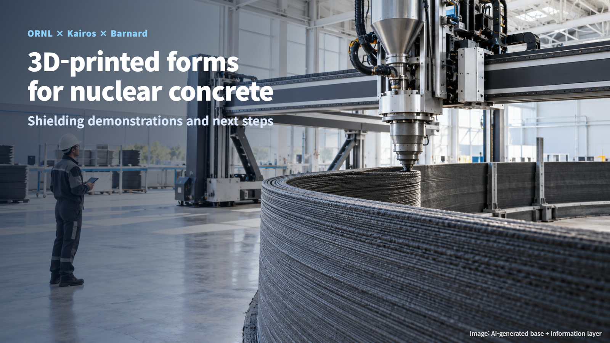
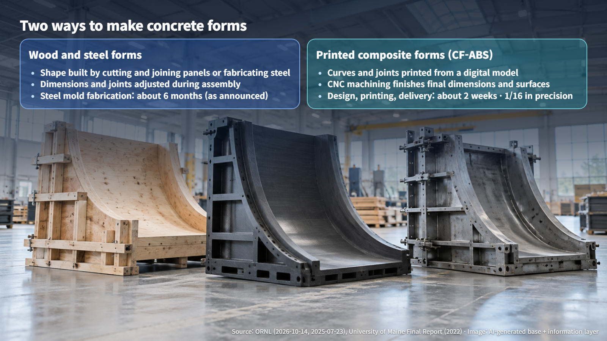
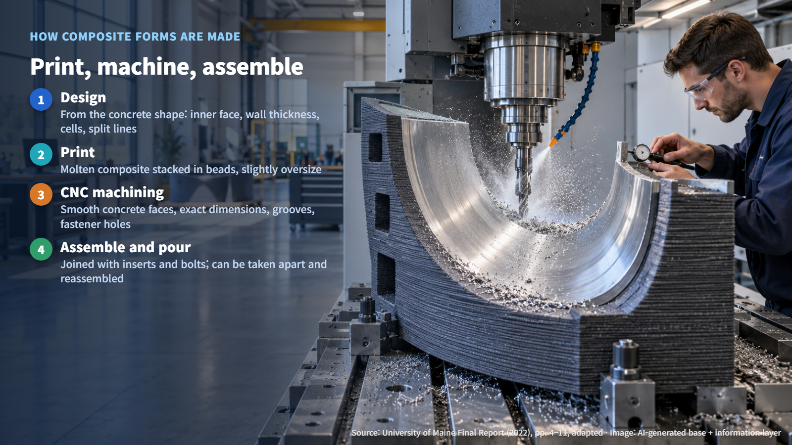
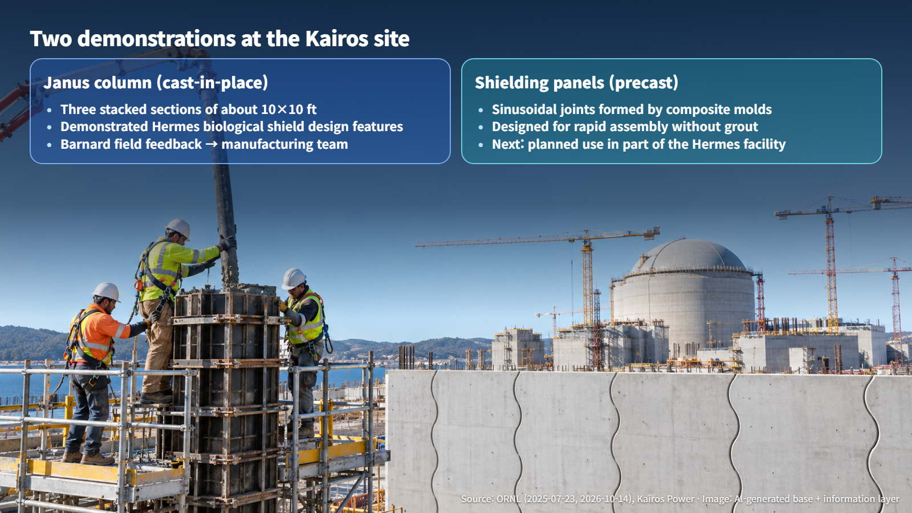

United States · Nuclear Construction
3D-Printed Forms for Nuclear Concrete: Kairos Power's Shielding Demonstrations
ORNL, Kairos Power and Barnard Construction used 3D-printed composite forms to cast nuclear shielding structures, and the next step is part of the Hermes facility.
What comes to mind when you hear that 3D printers are being used to build nuclear plants? On October 14, 2026, Oak Ridge National Laboratory (ORNL) in the United States announced that its nuclear construction collaboration with Kairos Power and Barnard Construction had received the CAMX Combined Strength Award. Let's look step by step at what the printer actually made and how it was used on a real nuclear site.

What Gets Printed Is the Mold
The printer produces the mold that concrete is poured into, known as formwork. Formwork holds fresh concrete in shape before it hardens and carries the load the concrete exerts while it is being poured. Think of a waffle iron: you pour in the batter, let it set, and lift out the finished shape. The structure itself is completed by pouring concrete into this mold and letting it cure, that is, waiting until the concrete has hardened sufficiently.
The material is carbon-fiber-reinforced ABS (CF-ABS). ABS is a plastic that can be melted and reshaped with heat, and carbon fiber is blended in to make it stiffer. The material is fed as pellets into a large extrusion printer, which builds the mold up layer by layer.
ORNL highlighted three results. Designing, printing and delivering the forms took about two weeks, compared with about six months to fabricate a conventional steel mold, according to the announcement. Critical surfaces reached a precision of 1/16 inch (about 1.59 mm), and a full-scale construction demonstration was completed at Kairos Power's Oak Ridge site. Speed, accuracy and a real construction site: each of these results is worth unpacking.

Build Up, Then Machine Down: How the Forms Are Made
The manufacturing process is well documented in published research from the University of Maine. The first step is design. Starting from the concrete shape that is needed, engineers define the inner face of the form, its wall thickness, a honeycomb-like internal cell structure, and where the form is split into sections and joined.
Next comes printing. The printer extrudes the molten composite as thin strands, called beads, and stacks them one layer at a time. The part is printed slightly oversize to allow for shrinkage as it cools and for the material that will later be machined away.
The final step is machining. CNC (computer numerically controlled) cutting smooths the faces that will touch the concrete and creates exact dimensions, grooves and fastener holes. Because the sections are assembled with threaded inserts and bolts, the forms can be taken apart and reassembled. Additive printing builds large shapes quickly, and machining finishes the final surfaces and connections: that combination is the heart of the technology. In other words, the printer quickly provides the rough body of the form, and the machine tool gives it its exact final shape.

In the research, CF-ABS showed relatively fewer printing defects than other materials such as wood-flour PLA. The study also concluded that post-machining is needed to reach the final dimensions and surface quality.
The Janus Column and Wave-Shaped Joints
The demonstration at the Kairos site followed two tracks. The first was the Janus column, built by cast-in-place construction, meaning the concrete is poured right where the structure will stand. According to ORNL's July 2025 announcement, each section measures about 10 by 10 feet, and three sections were stacked to form the column. Barnard crews pouring concrete into the CF-ABS forms is the defining image of this demonstration.
The column demonstrated design features of the biological shield for the Hermes test reactor. A biological shield is a thick concrete structure surrounding the reactor that reduces radiation during operation to protect workers. Barnard installed and used the forms itself and passed construction improvements back to the manufacturing team, and ORNL cited this feedback loop, linking materials, printing and machining with field construction, as a key achievement of the collaboration.
The second track was precast shielding panels, concrete members made in advance and then assembled in place, much like building blocks. Here, wood and steel forms were used together with composite molds. The composite molds create a sinusoidal, wave-like joint along the panel edges. Kairos Power explains that this design is intended for rapid assembly without grout (the material that fills gaps between members) while maintaining shielding performance.

Next Steps Toward Hermes
The next step is for Kairos Power and Barnard to apply this experience to part of the Hermes facility. The demonstration forms serve as the precursor model for those follow-on forms.
As field use expands, the items to verify are specific: the time each process step takes under the same shape and quantity conditions, where precision was measured and the results of repeated measurements, and shape retention and the loads on supports and fasteners during pouring. Because the forms are built for reuse, records of deformation and repair over successive uses also need to accumulate. Finally, the completed concrete is checked for dimensions, gaps at the joints between panels, and shielding performance. Together, these records show how the forms perform over a full construction cycle, from printing to the finished wall.
Materials development is also continuing. ORNL is developing biocomposites made from wood residues and has set a target of cutting material costs by 75%.
Even the thick shielding concrete of a nuclear plant starts with a well-made mold. When digital design, 3D printing, precision machining and field construction connect in a single workflow, that mold can be prepared faster and more accurately. The reuse records that build up at the Hermes site will show how this technology takes its place on nuclear construction sites.